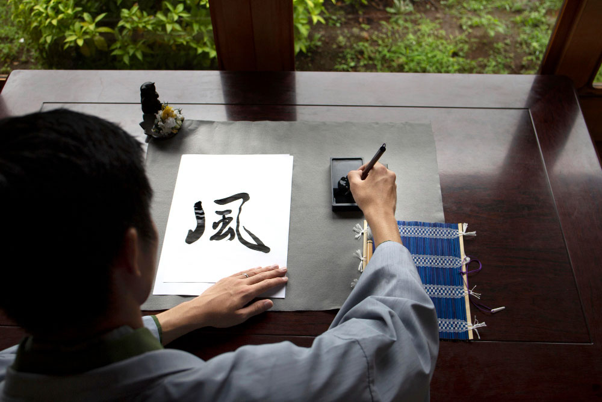
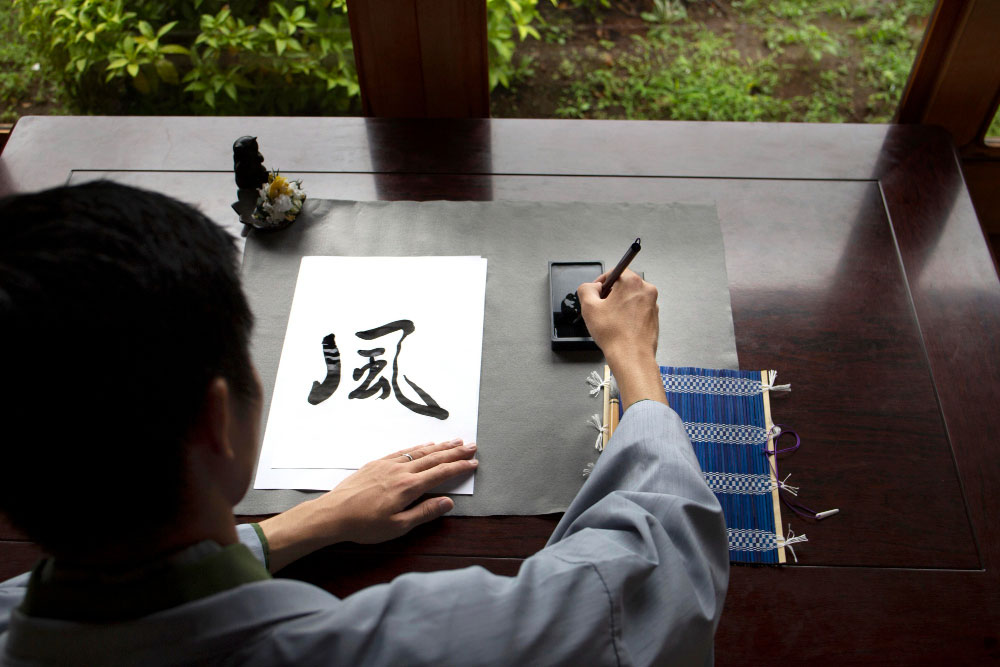

➼ The Japanese term Chanoyu translates to "hot water for tea", serving as a meditative, artistic practice embodying core Japanese values like Harmony, Respect, Purity, and Tranquility.
➼ The Japanese Tea Ceremony is a way of preparing and drinking green tea typically in a traditional tearoom with tatami floor. Beyond serving and receiving tea, one of the main purposes of the tea ceremony is for the guests to enjoy the hospitality of the host in an atmosphere distinct from the fast pace of everyday life.
➼ Today, the tea ceremony is practiced as a hobby, with many places where tourists can experience it as well. Tea ceremonies of varying degrees of formality and authenticity are offered by many organizations across Japan, including at some traditional gardens, culture centers, and hotels.
➼ Kyoto and Uji are among the best destinations in the country to enjoy Japan's tea culture.
 

➼ The art of writing characters on paper with brush and ink is known as shodo (way of writing). It is a way to understand literature and Buddhist beliefs the development mental discipline.
➼ Shodo is taught widely across Japan, as it's part of the curriculum for students to study.
➼ Today, there are many exhibitions of shodo works. These exhibitions are popular tourists attractions and a way for beginners to experience shodo.
➼ There is a signifcant New Year tradition called Kakizome, where people write their first calligraphy of the year (traditionally on January 2nd) using black ink to express good wishes, aspirations, or kanji, symbolizing a fresh start and good fortune.